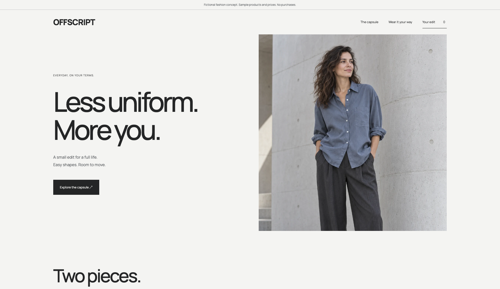
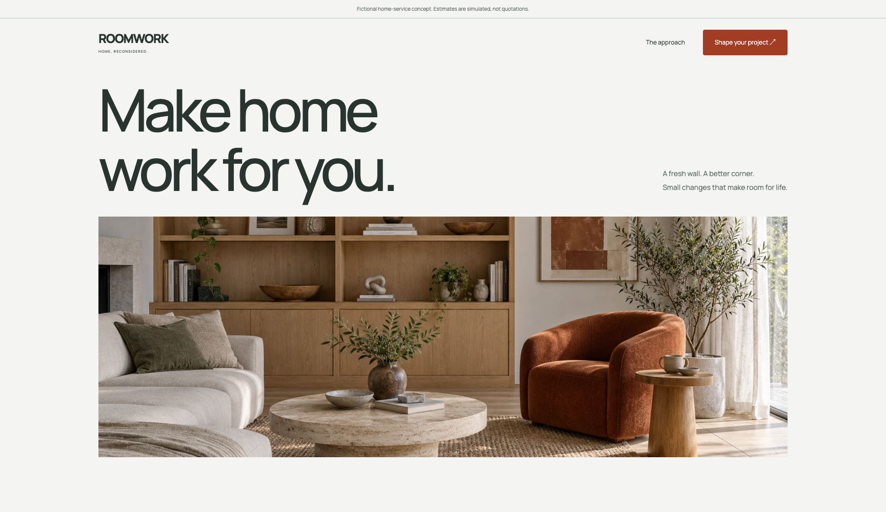

Storefront concept
Common Form
Homeware with a point of view.
Products, variants, a persistent bag and a full demo checkout.Independent work, open to explore
Six fictional business experiences and five personal product prototypes. Explore the interactions, then see what went into the work.
Independent industry concepts
Working examples of experiences I can help build, from independent shops and hotels to restaurants and local services.
6 working concepts
Homeware with a point of view.
Products, variants, a persistent bag and a full demo checkout.
Make the stay begin on the page.
Room discovery, custom date selection and a sample stay estimate.
A good table starts with a good invitation.
A searchable menu, dietary filters and an interactive table preview.
A little time, thoughtfully yours.
Service choices, available demo times and an appointment preview.
Everyday, on your terms.
Choose sizes, save a personal edit and download a sample enquiry brief.
A clearer brief for the room you imagine.
Explore a transparent sample estimator and build a downloadable project brief.Fictional brands, original generated imagery, working frontend interactions. No real bookings, purchases or client endorsements. Built with AI assistance.
The working playground
Personal, AI-assisted prototypes you can actually use. Clear about what works today and what is still being explored.

A Vue rich-text editor with floating tools, tables, images, local drafts and document exports.
Editor preview · single-user
Nineteen Vue components, including page flips, an AI-chat interface and six chart types.
Component preview · simulated chat & payments
Local keyword retrieval with exact passages and exportable evidence bundles. AI synthesis is planned.
Working prototype · no AI-generated answers
Compare briefs and requests, make scope decisions and export a change-request draft.
Working prototype · local rules, not AI
Search community needs, filter causes and make browser-local demo pledges.
Community prototype · fictional needsMeet the engineer behind these experiments, explore my professional experience and find a way to work together.
Visit my portfolio ↗